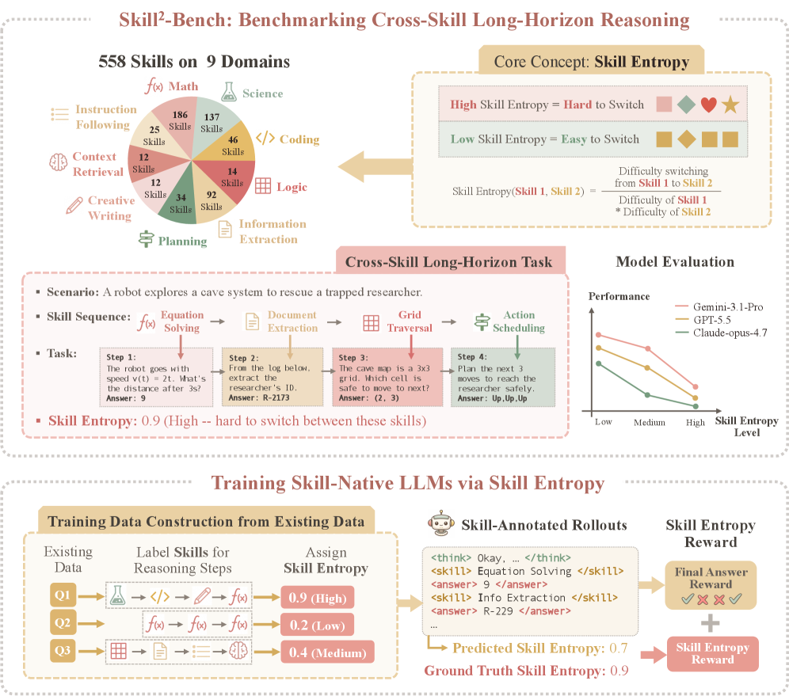
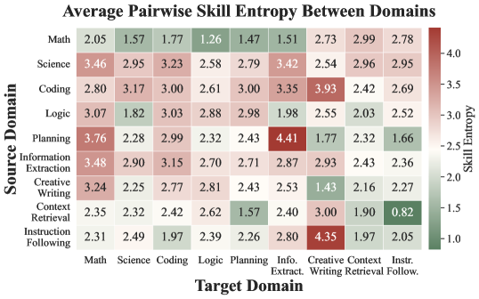

Skill Entropy: Benchmarking and Training Skill Switching
TL;DR
- "Toward Skill-Native LLMs: Skill Entropy for Benchmarking and Training Long-Horizon Reasoning" (arXiv 2608.05139; Yinghui He, Ling Yang, ..., Mengdi Wang, Sanjeev Arora — Princeton et al.; code released) isolates a failure mode orthogonal to skill mastery: even when a model can do each step of a long-horizon task in isolation, it fails at switching between skills mid-chain — carrying the previous step's solving mode and output format into a step that needs a different one.
- Skill Entropy quantifies this: a directional, pairwise ratio of single-skill accuracy to cross-skill accuracy under a fixed reference model. Skill²-Bench builds 558 skills across 9 domains into cross-skill tasks binned by entropy; accuracy of 8 frontier and 4 open thinking models drops as skill-switching difficulty rises.
- Turning the measure into a reward — GRPO plus a skill-entropy term that grades the model's predicted skill sequence against the gold plan — lifts Qwen3-4B-Instruct from 34.4 to 68.4 and Qwen3-1.7B from 14.6 to 40.1 on Skill²-Bench, beating GRPO by +9.6/+7.9 and the strongest skill-aware baseline (STAT) by +7.0/+7.1, with gains transferring to open-ended domains the RL never trained on.
Why this matters
The skill abstraction is everywhere in this tracker — skill libraries (SkillHone, MSCE), skill curricula (SkillRise), skill self-play — and the same week this paper landed, ContinualSkillBench (also added today) reported that explicit skill libraries often do no better than plain in-context adaptation. Both papers converge on a diagnosis this field has mostly ignored: the bottleneck is less having or storing skills than invoking the right one at the right moment. Skill Entropy is the first principled attempt to measure that transition difficulty as a first-class quantity — directional (math→writing ≠ writing→math), computed under a fixed reference model so it's a stable difficulty scale across evaluated models, and cheap enough to score every task in a benchmark.
The training side is the more consequential half. Long-horizon RL rewards are usually outcome-level (did the final answer verify?), which under-specifies how the chain should be organized. Making the model declare its skill per step and rewarding alignment of the declared skill plan with the gold plan is a structural reward — closer in spirit to process supervision than to outcome RL, but requiring only skill labels, not step-level human judgments. That it transfers to domains outside the RL distribution (creative writing improves most, despite training only on verifiable domains, and gains extend to MuSR, LongBench-MuSiQue, GPQA-Diamond, MMLU, IFEval) suggests the reward is teaching a reusable organizational behavior — when to close one mode of thinking and open another — rather than domain content.
The core idea
A cross-skill long-horizon task is a sequence of dependent steps, each invoking a different skill:
with skill sequence \(\mu(\tau)=(s_1,\ldots,s_L)\); each step's question \(q_i\) depends on earlier answers, so a model cannot treat steps independently.
Pairwise skill entropy fixes a reference model and compares its single-skill accuracy to its accuracy when the two skills are chained (Laplace smoothing \(\alpha=0.1\)):
Here \(\text{Accuracy}(s)\) is reference-model accuracy on multi-step questions using only skill \(s\), and \(\text{Accuracy}(s_a,s_b)\) is average per-step accuracy on two-step pairs whose first step uses \(s_a\) and second uses \(s_b\). The order matters — \(\text{SkE}(s_a,s_b)\neq\text{SkE}(s_b,s_a)\) in general. A task's entropy is the mean over its directed switches:
and tasks are binned into low/medium/high entropy levels. The "entropy" name is an analogy: harder switches make the next correct response less predictable under the reference model.
Skill entropy as reward. During RL the model emits a skill-annotated response — each step wrapped as <skill>Domain, Skill</skill><answer>…</answer> — which parses into a predicted skill sequence \(\hat\mu(\tau)\) and answers. GRPO trains with a combined per-task reward:
where \(r_{\text{ans}}\) is mean per-step answer accuracy under per-domain scorers, and \(\hat\rho,\rho^\star\in[0,1]\) are the ranks (on the training distribution) of the predicted and gold task-level skill entropies. Predicted skills are first mapped by embedding similarity to the nearest skill-bank entry, so semantically equivalent skill names aren't punished. Defaults: \((\lambda_{\text{ans}},\lambda_{\text{ent}})=(0.7,0.3)\).
How it works

Figure 1 from the paper: the pipeline from skill bank and seed datasets to entropy-scored cross-skill tasks, used both to build Skill²-Bench and as a training signal.
Skill²-Bench covers 558 skills in 9 domains — six verifiable (Math, Coding, Science, Planning, Logic, Information Extraction) and three open-ended (Instruction Following, Context Retrieval, Creative Writing). Tasks chain 2–10 steps whose questions consume earlier outputs; each task gets an entropy score and difficulty bin. Evaluating 12 models (8 frontier, 4 open thinking models) shows accuracy decreasing as task entropy rises — models that tie on low-entropy tasks pull apart on high-entropy ones. A revealing failure analysis: on cross-skill steps the model solved correctly in single-skill mode, errors concentrate where the model names the wrong skill family — it isn't that the skill is missing, it's that the previous step's mode bleeds into the current one (Figure 5; the case study in Figure 3 shows a model reusing a math skill with a numeric answer where a Theme Creation step was required).

Figure 2 (left) from the paper: average pairwise skill entropy by (source, target) domain — larger cells mean switching from the row domain into the column domain is harder; the asymmetry is the point.
# Benchmark construction
fix reference model M_ref
for skills (s_a, s_b): estimate Accuracy(s_a), Accuracy(s_b),
Accuracy(s_a, s_b) on two-step chains → SkE(s_a, s_b)
sample skill sequences; synthesize L-step tasks (L ∈ [2,10])
with dependent steps; verify per-domain; bin by SkE(τ)
# Skill-Entropy RL (on the 6 verifiable domains)
for each task τ with gold plan μ(τ):
rollout G responses in skill-annotated format
parse each into (ŝ_1..ŝ_L, â_1..â_L)
r_ans ← mean per-step accuracy (per-domain scorers)
map ŝ_i → nearest skill-bank entry (embedding similarity)
r_ent ← 1 − | rank(SkE(ŝ)) − rank(SkE(s_gold)) |
r ← 0.7·r_ans + 0.3·r_ent
update policy with GRPO on r
Results
On Skill²-Bench, Skill-Entropy RL is the best method at both scales: Qwen3-4B-Instruct 34.4 → 68.4 (SFT 55.8, GRPO 58.8, Skill-Distill 58.1, SkillRL 59.3, STAT 61.4) and Qwen3-1.7B 14.6 → 40.1 (GRPO 32.2, STAT 33.0). Since GRPO is exactly the ablation without the entropy reward, the +9.6/+7.9 gap isolates the value of grading the skill plan. It wins 7 of 9 domains at both sizes, with the largest gain on Creative Writing — an open-ended domain excluded from RL training — and the cross-skill score after training exceeds the base model's single-skill score, so the method improves underlying ability, not just format compliance. Transfer holds on five external benchmarks (MuSR, LongBench-MuSiQue, GPQA-Diamond, MMLU, IFEval) where it attains the highest average at both scales, and the same trend replicates on Llama-3.2-3B-Instruct and Olmo3-7B-Instruct. On the training-dynamics side, adding the entropy reward keeps improving reward after vanilla GRPO plateaus on OpenR1-Math (Figure 4).
How it connects
- ContinualSkillBench (added today): complementary negative result — skill libraries don't reliably beat in-context adaptation. Skill Entropy locates the difficulty in transitions, suggesting library-centric systems under-invest in switch-time behavior.
- Skill line in this tracker: SkillRL and STAT appear here as baselines; SkillHone (decision-history skills), MSCE (memory→skills), and SkillRise (curriculum) all assume skills get invoked correctly once stored — this paper measures exactly where that assumption breaks.
- AgentOPSD (tutorial also added today): both papers use skills as training-time structure for RL — AgentOPSD as privileged teacher context for credit assignment, Skill Entropy as a plan-alignment reward. Together they mark a shift from "skills as prompt scaffolding" to "skills as reward/credit structure."
- Long-horizon agents survey / TRACE: skill switching is a complementary axis to turn-level credit — one shapes what mode the model reasons in, the other which turns get reinforced.
Critical take
The measure inherits everything from the reference model: SkE is a smoothed accuracy ratio under one fixed model, so "switching difficulty" conflates genuine cognitive interference with that reference model's idiosyncratic weaknesses, and calling it entropy is branding, not information theory. The reward needs gold skill sequences — fine for synthesized benchmarks, unclear for organically collected tasks — and \(r_{\text{ent}}\) compares rank-transformed scalar entropies of predicted vs gold plans, a fairly lossy summary: a wrong plan with a similar entropy rank scores well (the embedding-matching step softens but doesn't eliminate this). Evaluation on the authors' own benchmark favors the method that optimizes its structure, so the external-benchmark transfer results (MuSR, GPQA, etc.) carry most of the evidentiary weight — and those are averages over five heterogeneous suites; per-suite numbers live in an appendix worth checking before citing. The core empirical fact, though, looks robust and matters: models fail long-horizon tasks disproportionately at skill boundaries, and rewarding the plan structure is a cheap, transferable fix.
If you remember three things
- Skill switching, not skill mastery, is the long-horizon bottleneck: models that solve every step in isolation still fail chained versions, and errors concentrate where the model names the wrong skill family — the previous step's mode bleeds forward.
- Skill entropy = smoothed ratio of single-skill to cross-skill accuracy under a fixed reference model — directional, cheap, and usable both to bin benchmark difficulty (Skill²-Bench, 558 skills, 9 domains) and as a training signal.
- Rewarding the skill plan works: GRPO + a 0.3-weighted entropy reward that grades the predicted skill sequence doubles-ish Skill²-Bench scores (34.4→68.4 at 4B, 14.6→40.1 at 1.7B) and transfers to open-ended domains and external benchmarks the RL never saw.